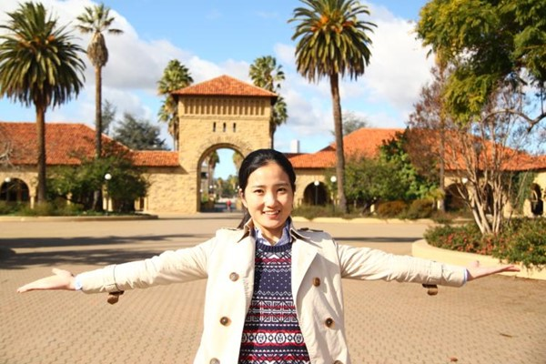

竺可桢奖学金获得者——陈琪美
中共正式党员，2009年11月加入中国共产党。2012年9月以硕士生身份进入信息与通信 工程研究所，2015年3月转为博士生，2015年9月至2016年9月受国家留学基金委资助，赴美国加州大学戴 维斯分校交流。在研究生期间，以第一作者身份共发表了论文14篇，包括TOP SCI期刊论文6篇、SCI期刊 论文2篇，国际顶尖会议论文6篇；授权发明专利一项；参与国家自然科学基金项目和国家科技重大专项5 项；获评竺可桢奖学金、博士研究生国家奖学金、罗姆奖学金、三星奖学金、浙江大学优秀研究生等荣誉。